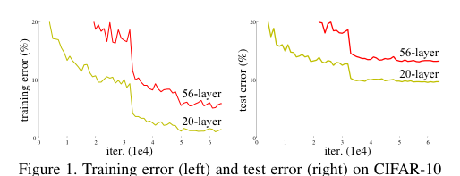
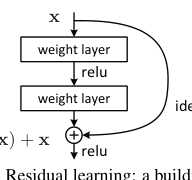
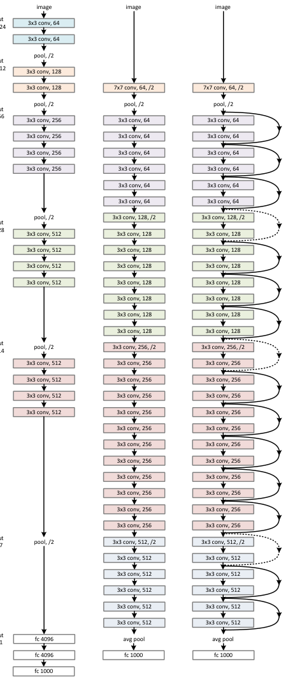
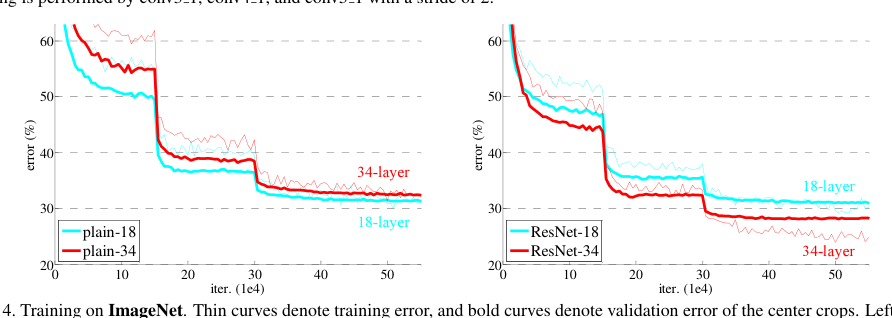
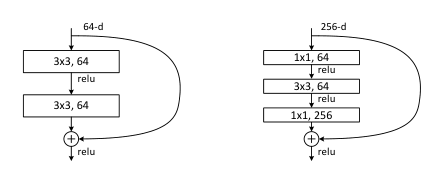
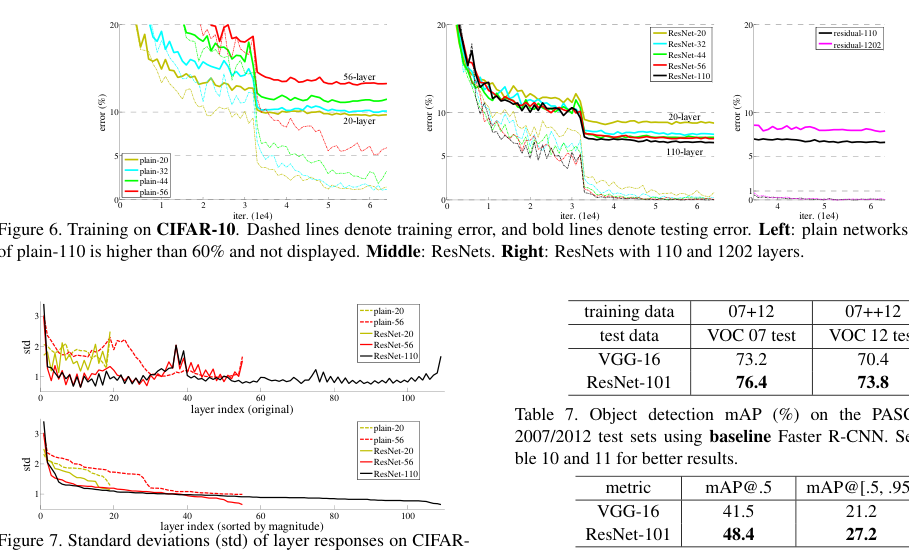

Deep Residual Learning for Image Recognition

| Architecture Type | Residual Convolutional Neural Network |
|---|---|
| Key Innovation | Identity shortcut connections (skip connections) to bypass one or more layers. |
| Performance Metric | 3.57% error on ImageNet test set; won ILSVRC 2015. |
| Computational Efficiency | Enables training of 152-layer networks with lower complexity than VGG-16. |
| Venue | Computer Vision and Pattern Recognition |
| Year | 2015 |
| Citations | 224977 |
| DOI | Link |
Deep Residual Learning for Image Recognition introduced ResNets, a groundbreaking neural network architecture that enabled the training of substantially deeper networks by using skip connections. By reformulating layers as learning residual functions with reference to the layer inputs, the authors addressed the degradation problem where accuracy saturates and then rapidly diminishes as network depth increases. ResNets won the ilsvrc 2015 competition and have since become a foundational component of modern computer vision and deep learning.
The Degradation Problem
As neural networks grew deeper, researchers encountered a counterintuitive phenomenon: adding more layers led to higher training error, a problem distinct from overfitting. This 'degradation' suggested that deep systems were difficult to optimize. If a shallow architecture can be augmented with identity mappings to form a deeper counterpart, the deeper model should, in theory, perform at least as well as the shallow one.
However, experiments showed that standard solvers struggled to find these identity solutions. ResNets address this by explicitly allowing the network to learn the difference, or residual, between the input and the desired output, making identity mappings much easier to learn. Figure 1 illustrates this residual learning block.
Residual Learning Blocks and Shortcuts
The core of the ResNet is the residual block. Instead of trying to directly learn a mapping $H(x)$, the block is designed to learn $F(x) = H(x) - x$. The final output is then obtained by adding the input back: $y = F(x) + x$. This 'identity shortcut connection' skip-layers without adding extra parameters or computational complexity.
These shortcuts allow gradients to flow more easily through the network during gradient that is needed in the calculation of the weights to be used in the network.">backpropagation, mitigating the vanishing gradient problem. In many cases, the residual functions $F(x)$ are small, and the shortcut connections provide a 'highway' for information to pass through the deep stack.
Architecture: VGG-style and Bottleneck Designs
The paper explores several ResNet architectures, including a 34-layer plain network and its residual counterpart. For deeper networks like ResNet-50, 101, and 152, the authors introduced 'bottleneck' blocks. These blocks use 1x1 convolutions to reduce and then restore dimensions, which significantly improves computational efficiency while maintaining high depth.
This design allowed the 152-layer ResNet to achieve state-of-the-art results while having lower complexity (flops) than the 16-layer VGG-16 network. The consistency of these results across different depths demonstrated the robustness of the residual learning framework.
Impact and Legacy
ResNets revolutionized deep learning by proving that depth was not just limited by hardware, but by architectural design. The principles of residual learning have been adopted far beyond image recognition, influencing the design of Transformers (which use gradient flow through deep networks by providing shortcut paths that bypass individual layers.">residual connections), GANs, and various reinforcement learning agents.
The paper remains one of the most cited works in artificial intelligence, and ResNet-50 continues to serve as a standard benchmark and backbone for countless computer vision applications.
Concept Breakdown
Learning the difference ($F(x)$) between the input and the target output, rather than the target output itself.
A connection that bypasses one or more layers, adding the input of a block directly to its output.
The observation that very deep networks often perform worse than shallower ones during training, even when not overfitting.
A residual block variant using 1x1, 3x3, and 1x1 convolutions to reduce computational cost in very deep networks.
A problem in deep learning where gradients become extremely small during gradient that is needed in the calculation of the weights to be used in the network.">backpropagation, preventing weights from updating; ResNets mitiltiplicative unit that controls information flow.">gate this via shortcuts.
Mathematics
Residual Block Output
| Symbol | Meaning |
|---|---|
| $x$ | Input to the residual block |
| $\mathcal{F}$ | The residual function to be learned (e.g., two conv layers) |
| $W_i$ | Learned weights of the layers within the block |
Figures and Explanations

Diagram of a residual building block showing the weight layers and the identity shortcut connection that performs the element-wise addition.

Comparison of training error on ImageNet for 'plain' networks vs. ResNets, demonstrating how ResNets successfully overcome the degradation problem at increased depths.




See Also
References
- Training Very Deep Networks - R. Srivastava, Klaus Greff et al. (2015)
- Faster R-CNN: Towards Real-Time Object Detection with Region Proposal Networks - Shaoqing Ren, Kaiming He et al. (2015)
- Object Detection via a Multi-region and Semantic Segmentation-Aware CNN Model - Spyros Gidaris, N. Komodakis (2015)
- Highway Networks - R. Srivastava, Klaus Greff et al. (2015)
- Fast R-CNN - Ross B. Girshick (2015)
- Object Detection Networks on Convolutional Feature Maps - Shaoqing Ren, Kaiming He et al. (2015)
- Batch Normalization: Accelerating Deep Network Training by Reducing Internal Covariate Shift - Sergey Ioffe, Christian Szegedy (2015)
- Delving Deep into Rectifiers: Surpassing Human-Level Performance on ImageNet Classification - Kaiming He, X. Zhang et al. (2015)
- FitNets: Hints for Thin Deep Nets - Adriana Romero, Nicolas Ballas et al. (2014)
- Convolutional neural networks at constrained time cost - Kaiming He, Jian Sun (2014)
- Fully convolutional networks for semantic segmentation - Evan Shelhamer, Jonathan Long et al. (2014)
- Deeply-Supervised Nets - Chen-Yu Lee, Saining Xie et al. (2014)
- Going deeper with convolutions - Christian Szegedy, Wei Liu et al. (2014)
- Very Deep Convolutional Networks for Large-Scale Image Recognition - K. Simonyan, Andrew Zisserman (2014)
- ImageNet Large Scale Visual Recognition Challenge - Olga Russakovsky, Jia Deng et al. (2014)
- Caffe: Convolutional Architecture for Fast Feature Embedding - Yangqing Jia, Evan Shelhamer et al. (2014)
- Spatial Pyramid Pooling in Deep Convolutional Networks for Visual Recognition - Kaiming He, X. Zhang et al. (2014)
- Microsoft COCO: Common Objects in Context - Tsung-Yi Lin, M. Maire et al. (2014)
- On the Number of Linear Regions of Deep Neural Networks - Guido Montúfar, Razvan Pascanu et al. (2014)
- OverFeat: Integrated Recognition, Localization and Detection using Convolutional Networks - P. Sermanet, D. Eigen et al. (2013)